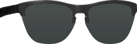
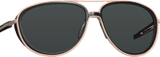
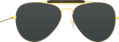
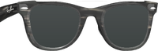
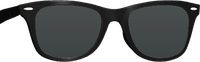
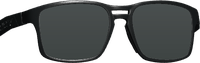
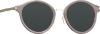
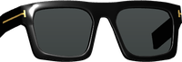
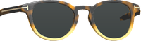

Updates the approved proposal with the owner's 2026-10-13 decisions: the ten purchased 3D pairs instead of drawn styles, existing glasses replaced instead of tinted, and turned or side faces supported. Tab placement, Reset, Lenses, Darkness, Size and the per-face behaviour are unchanged. Photos are real renders from the trial.

Club
Pilot
Aviator
Bridge
Wayfarer
Sport
Round
Square
PantoTen pairs, shown as their own thumbnails in a scrolling row after None. The chosen pair lands on the eyes as a 3D frame: sized, tilted and turned with the head, arms running back to the ears and tucked under hair. Lenses: Dark, Brown, Green, Gradient, Mirror; the eyes stay visible through them. Darkness 0–100. Size fine-tunes the automatic fit (−50 to +50). None removes them.
Owner 2026-10-13: their glasses are replaced, not tinted. The frame is painted out (as Remove does) and the chosen pair goes on in its place. The style row stays. None puts their own glasses back.
Owner 2026-10-13: profiles are supported. The pair turns with the head; the far lens hides behind the nose and the near arm runs to the ear.
Eyes covered by hair or hands, a face too small, or a face the app cannot read reliably: the controls are dimmed and the notice says why. The tab stays, so it never jumps.